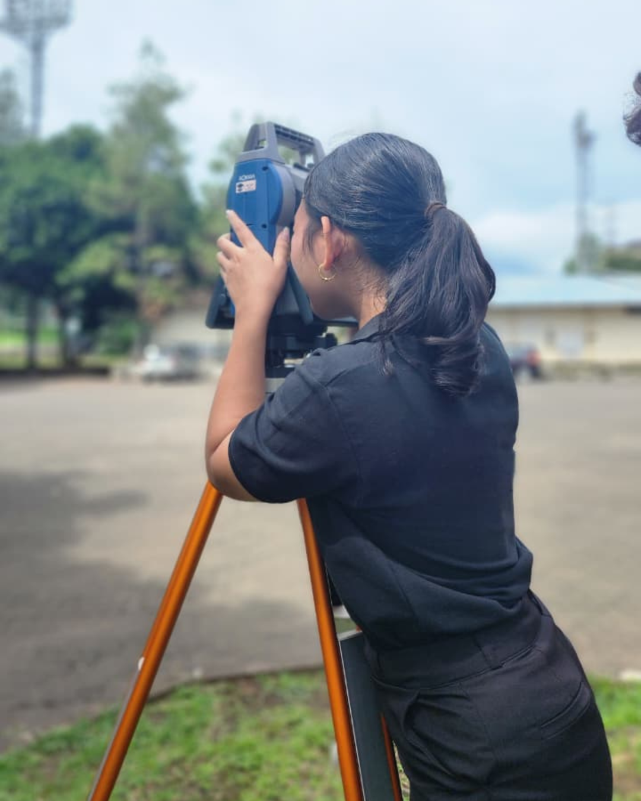

HELLO
I'M ADINDA DWI YULIANTO
Saya merupakan lulusan Universitas Pendidikan Indonesia dengan gelar Sarjana Terapan Geografis dari program studi Survei Pemetaan dan Informasi Geografis. Berbekal kemampuan dalam pengolahan dan analisis data geospasial, saya terbiasa menggunakan berbagai perangkat lunak seperti ArcGIS, QGIS, ENVI, dan Global Mapper untuk mendukung kegiatan pemetaan, digitasi, serta analisis spasial.
Saya memiliki ketertarikan pada Pengembangan Web, Sistem Informasi Geografis (SIG), Penginderaan Jauh, Survei Terestris, serta Desain Kreatif dan Pengolahan Visual Digital.
Bagi saya, proses belajar merupakan kesempatan untuk terus berkembang. Saya senang mengeksplorasi teknologi baru, meningkatkan keterampilan, dan berkolaborasi dengan orang lain dalam menciptakan pengalaman serta solusi yang bermanfaat. Saat ini, saya terbuka untuk kesempatan kerja, kolaborasi proyek, maupun diskusi seputar GIS, pemetaan, dan pengembangan teknologi geospasial.